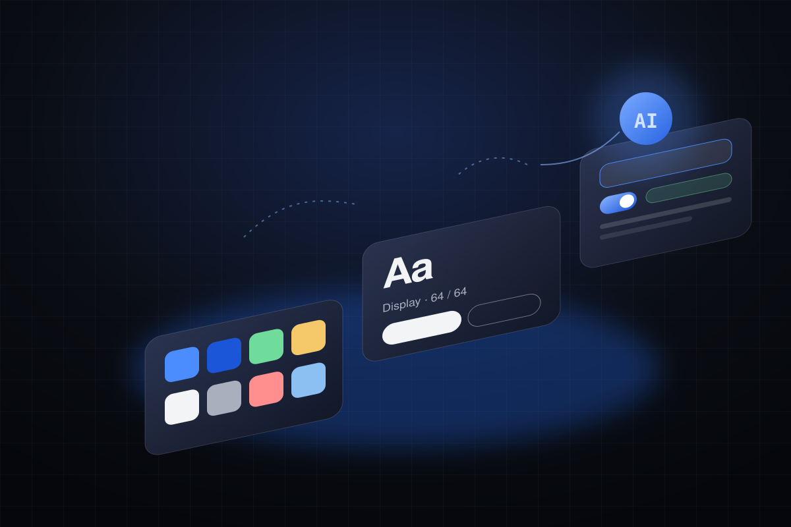

Complex products, made clear.
Three product case studies from AI infrastructure, sovereign cloud and satellite operations, and one on building a design function. Each shows the problem, my role, the decisions and the evidence.

How users connect, configure, monitor and recover GPU workloads — with one state model and trade-offs visible at the moment of choice.

Tenant and project context, roles described as capabilities, and governance shown where decisions happen.

A strict state vocabulary, alerts ranked by impact, and map and list as one view — designed around operator decisions.

Leading a distributed team of 19 designers and front-end developers: standards, delivery, stakeholders and culture.

Figma libraries, tokens, Claude and MCP — separating what was researched, piloted and implemented.